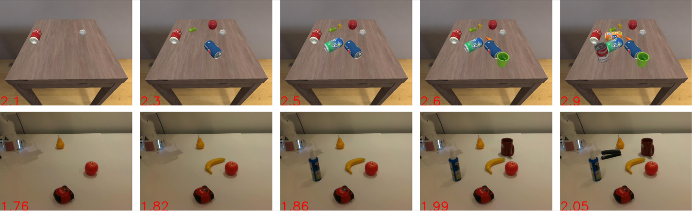
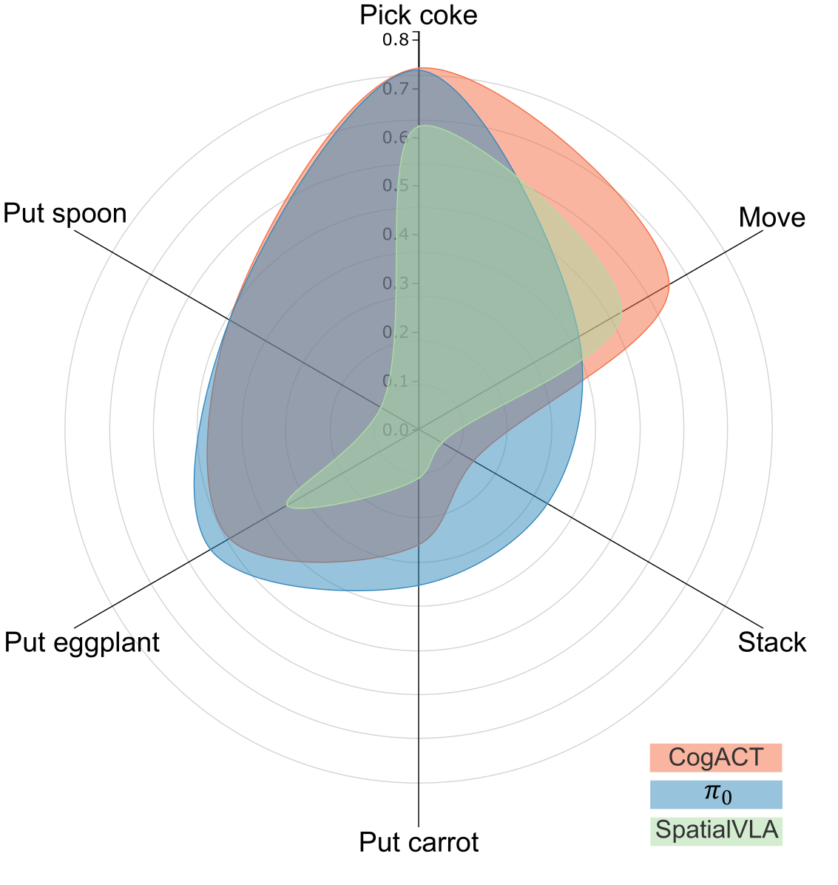
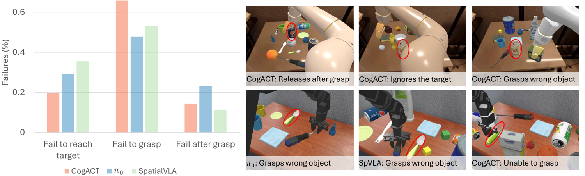
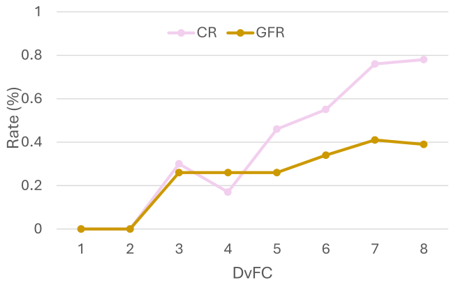
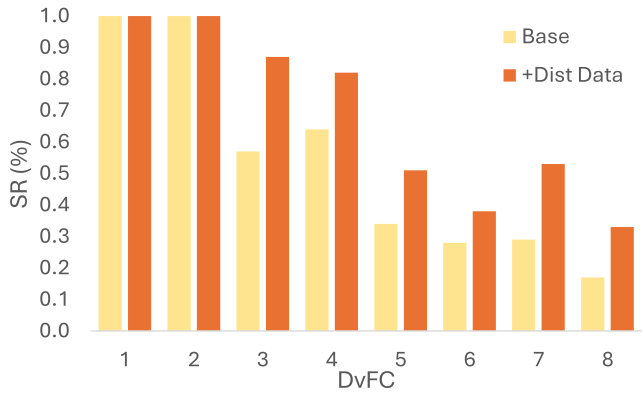

Summary
An evaluation protocol that quantifies how visual clutter degrades vision-language-action manipulation policies, built on a unified measure of scene clutter.
Abstract
In this work, we propose an evaluation protocol for examining the performance of robotic manipulation policies in cluttered scenes. Contrary to prior works, we approach evaluation from a psychophysical perspective, therefore we use a unified measure of clutter that accounts for environmental factors as well as the distractors quantity, characteristics, and arrangement. Using this measure, we systematically construct evaluation scenarios in both hyper-realistic simulation and real-world and conduct extensive experimentation on manipulation policies, in particular vision-language-action (VLA) models. Our experiments highlight the significant impact of scene clutter, lowering the performance of the policies, by as much as 34% and show that despite achieving similar average performance across the tasks, different VLA policies have unique vulnerabilities and a relatively low agreement on success scenarios. We further show that our clutter measure is an effective indicator of performance degradation and analyze the impact of distractors in terms of their quantity and occluding influence. At the end, we show that finetuning on enhanced data, although effective, does not equally remedy all negative impacts of clutter on performance.
Key Contributions
- A psychophysically motivated evaluation protocol using a unified clutter measure to characterize scenes populated with distractors.
- Scene designs spanning diverse distractor types and quantities, including partial occlusion, while guaranteeing the target stays reachable without rearrangement.
- Large-scale evaluation of five state-of-the-art VLA policies in the SIMPLER simulator and in a real-world environment.
- Analysis showing the clutter measure functions as a predictor of expected policy performance.
- A mitigation study finetuning a VLA policy on real-world distraction data.
Approach

Results
- Visual clutter measurably degrades success across all five evaluated policies.
- The clutter measure serves as an indicator of expected performance before deployment.
- Finetuning on real-world distraction data reduces, but does not eliminate, the clutter penalty.
Average policy performance in cluttered scenes
| Policy | SRbase | SR | SRno-occ | Collision rate |
|---|---|---|---|---|
| Octo | 0.173 | 0.117 | 0.104 | 0.867 |
| OpenVLA | 0.533 | 0.262 | 0.170 | 0.590 |
| SpatialVLA | 0.587 | 0.240 | 0.169 | 0.684 |
| π₀ | 0.711 | 0.470 | 0.346 | 0.840 |
SRbase is success on uncluttered scenes. Every policy loses a large fraction of its success rate once distractors are introduced.




BibTeX
@article{rasouli2025distracted,
title = {Distracted Robot: How Visual Clutter Undermine Robotic Manipulation},
author = {Amir Rasouli and Montgomery Alban and Sajjad Pakdamansavoji and Zhiyuan Li and Zhanguang Zhang and Aaron Wu and Xuan Zhao},
journal = {arXiv preprint arXiv:2511.22780},
year = {2025}
}